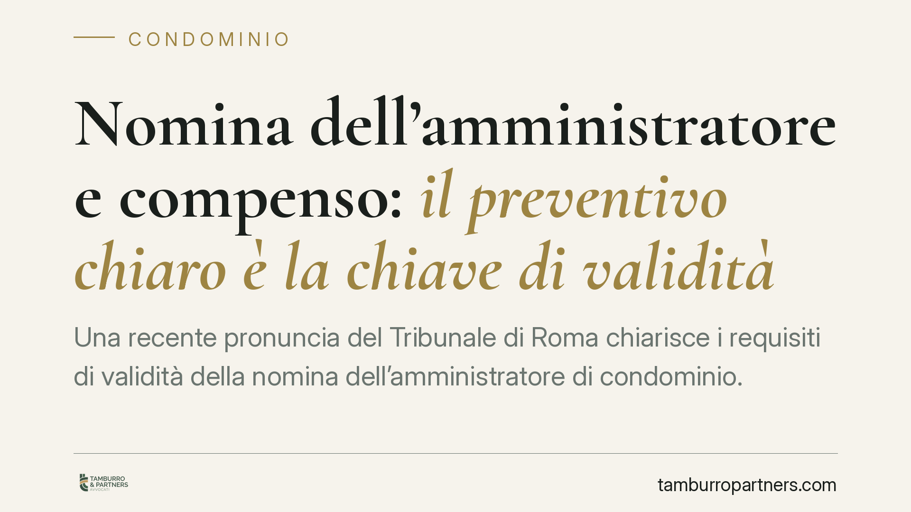

Nomina dell'amministratore e compenso: il preventivo chiaro è la chiave di validità
Una recente pronuncia del Tribunale di Roma chiarisce i requisiti di validità della nomina dell'amministratore di condominio. Il compenso deve risultare da un preventivo analitico, comunicato ai condòmini prima dell'assemblea e approvato. Se la maggioranza è raggiunta, non è necessario aprire le offerte degli altri candidati. Una precisazione che incide sulla gestione pratica delle assemblee e sulla tenuta delle delibere.

Il caso
Il Tribunale di Roma, Sezione V, con la sentenza n. 570/2026 (13 gennaio 2026), è tornato sui requisiti di validità della nomina dell'amministratore di condominio. Al centro della decisione, due questioni ricorrenti nel contenzioso condominiale: la determinazione del compenso e la gestione delle candidature concorrenti in assemblea.
Il giudice ha confermato la legittimità della nomina quando il compenso dell'amministratore è dettagliato in un preventivo trasmesso ai condòmini prima dell'assemblea e da questa approvato. Ha inoltre escluso l'obbligo di aprire le buste degli altri candidati quando la maggioranza di legge risulta già raggiunta sul nominativo prescelto.
Inquadramento normativo
Il riferimento è l'art. 1129, comma 14, del Codice civile, introdotto dalla riforma del condominio (legge n. 220/2012). La norma stabilisce che l'amministratore, all'atto dell'accettazione della nomina e del suo rinnovo, deve specificare analiticamente, a pena di nullità della nomina stessa, l'importo dovuto a titolo di compenso per l'attività svolta.
La ratio è chiara: evitare che il compenso resti indeterminato o che emergano, a posteriori, voci di spesa non previste. L'"analiticità" richiesta dalla legge significa che il preventivo deve distinguere le prestazioni ordinarie da quelle straordinarie o aggiuntive (ad esempio gestione di contenziosi, pratiche edilizie, interventi fuori budget), indicando per ciascuna il relativo corrispettivo.
Il Tribunale di Roma si colloca nel solco di questo principio: la nullità scatta solo in assenza di una specificazione chiara. Al contrario, un preventivo dettagliato, portato a conoscenza dei condòmini prima del voto e approvato dall'assemblea, soddisfa pienamente il requisito di legge.
Le candidature concorrenti
La seconda parte della decisione riguarda un profilo procedurale. Quando all'ordine del giorno figura la nomina dell'amministratore e si presentano più candidati, l'assemblea non è tenuta a esaminare tutte le offerte se il quorum deliberativo si forma già sul primo nominativo votato.
In altri termini, raggiunta la maggioranza prevista dall'art. 1136 del Codice civile, la delibera è perfetta. L'omessa apertura delle buste degli altri candidati non costituisce vizio invalidante, perché la volontà assembleare si è già legittimamente formata. Non esiste, nel nostro ordinamento, un obbligo di procedura comparativa in senso stretto per la scelta dell'amministratore.
Implicazioni pratiche
Per il condominio, la pronuncia offre un criterio operativo utile. La validità della nomina non dipende dalla quantità di preventivi esaminati, ma dalla trasparenza del compenso del candidato prescelto e dalla sua approvazione preventiva.
Per l'amministratore, il messaggio è altrettanto netto: la cura nella redazione del preventivo non è un adempimento formale, ma la condizione che mette la nomina al riparo da impugnazioni. Un preventivo generico o omnicomprensivo espone al rischio di nullità.
Per i condòmini, infine, resta fermo il diritto a ricevere le informazioni in tempo utile. Il preventivo deve circolare prima dell'assemblea, così da consentire una valutazione consapevole al momento del voto. Una comunicazione tardiva o incompleta può incidere sulla regolarità della delibera.
Cosa fare in concreto
- Pretendete un preventivo analitico. Verificate che distingua compenso ordinario, voci straordinarie e attività aggiuntive, con importi specifici per ciascuna.
- Richiedete la trasmissione preventiva. Il documento deve pervenire ai condòmini prima dell'assemblea, non essere presentato per la prima volta in seduta.
- Fate verbalizzare l'approvazione del compenso. Il verbale deve dare atto che l'assemblea ha approvato il preventivo, non solo nominato la persona.
- Controllate il quorum. Assicuratevi che la maggioranza richiesta dall'art. 1136 c.c. sia correttamente raggiunta e documentata.
- Conservate la documentazione. Preventivo, convocazione e verbale costituiscono la prova della regolarità della nomina in caso di contestazione.
Disclaimer
Contributo informativo a cura di Tamburro & Partners - Avv. Giuseppe Tamburro. Non costituisce parere legale.
Ogni condominio ha una storia a sé.
Se gestisci un'amministrazione e vuoi un confronto su una specifica questione condominiale, scrivi allo studio. Ti rispondiamo entro un giorno lavorativo.